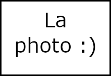
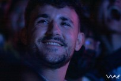

Vous avez vu Yoann il y a 5 min dans la rue…ah maintenant il est dans l'amphi… non ? Certains l'ont vu aux 3F !? Encore en train de courir cet hyperactif…
Energie : 100%
Omniprésence: 100%
Capable de faire Silliker-ensea en moins de 3min
Professionnel de la roue libre
Coiffeuse, barman, cuisinière, dessinatrice, elle multiplie les talents presque inutiles pour le bien de la liste. “Je ne vais pas citer de nom : Imade et Ilias”
Message vocaux : 90%
Présence en cours : 20%
Compose mieux les cocktails que les passe-bas
Petit et discret, on vous présente le grand malade de l’équipe, dans les deux sens du terme, n’a pas besoin de deuxième cheville pour faire ses vols à l'étalage. LV3 Arabe mais toujours aussi blanc.
Taille : 95%
Innocence : 5%
Gouffre avec fond (j'ai pieds)
Même s'il a un visage de catcheur énervé, JR est le nounours de l'équipe. Fan inconditionnel de Céline Dion, il ne raterait une séance de street workout que pour elle ! Co-auteur d’un test de persanalité
Étranglement : 100%
Agilité : 90%
Pro du Pec Pop
Perez insulte quiconque n'ayant pas remboursé 6€ à l'asso. Lucie n'a peur de rien, ni le rond point de l'étoile qui est pour elle une simple commodité ni JR qui fronce les sourcils.
Conduite : 90%
harcèlement de "rue" : 100%
Coup de Pression : 100%
Infiltrée à Centrale Supelec
Plus gros glow up listeux de tous les temps. Prêt à tout et armé à bloc. Fragile quand Delacressoniere le fait passer au tableau car il est arrivé en retard… il était à Silliker !
Talent : 80%
Ponctualité en cours : 5%
Sosie officiel d’un chanteur de génie

Connu pour son humour de beauf, notre Frankie national illumine nos après-midis cookies. Il nous fait une blague.. mais pas 15, il nous fait deux blagues… mais pas 15 .. attendez, il a déjà fait 15 blagues ?! Faudrait pas que vous le retrouviez au brave côté de Lucie à la trésorerie...
Humour : 90 %
Photos à basic fit : 100%
Beauf de Talent
Flore n'est en réalité pas une fleur mais une araignée, si elle est respo com' c'est parce qu'elle sait tisser des liens avec les gens qui l'entourent même si elle est surtout la nounou d’Imade et Tristan. La bluffeuse des BDchaîné. Elle pourrait vous faire croire n'importe quoi sans même sourciller.
Confiance : 100%
Résistance à la pression : 100%
Passe sa vie à râler
Gentille, autoritaire, calme, énervée, Manon peut tout faire à tout heure, et surtout des réunions ! Passible de trou de mémoire, elle n'hésitera pas à vous raconter plusieurs fois la même chose ! Douce, brillante, attentionnée, captivante et envoutante, mais Manon non.
Princesse new age : 95%
Cimenterie : 80%
Entêtée sur les bords (et le milieu aussi)
Naël est le petit mouton de l'équipe. Tellement choupie que les grands mères préfèrent le pécho que manger nos cookies.
Attention il héberge le président de la liste adverse chez lui
Curly hair : 95%
Sourire : 60%
Drague ta mamie
Violence, drogue, guérillas, c'est au sein des favelas mexicaines, qu'est née la GoldenGoat.Il évolue maintenant sur les arides terrains de Cergy en costume short.
Camouflage : 70%
Capacité de survie : 100%
Combat en mini short et casquette hélice
Passé maître dans l'imitation de macabés, l'expert repli fuite voit tout, sait tout, comprends tout…
Equilibre : 80%
Cheveux : 90%
Termine un ours avec sa planche de skate
expert repli fuite tmtc
Connus pour ses photos post-bad et ses snaps douteux, Mathys ne manque pas de charisme. Il aurait en lui le talent de Kasparov, près à mat en 3 quiconque songerait à l'approcher.
Beauté : 85%
Espagnol : 45%
Professionnel du coup du berger
Connue pour son apparente allergie à l’alcool, vous pourrez le retrouvez dans vos toilettes, salles de bains et cuisines en train de se vider pour votre plus grand plaisir. Co-auteur d’un test de persanalité.
Aptitude à parier : 100%
Qualité du foie : 5%
Vomi avant 20h (et après aussi)
J’sais même pas s’il est fort mais j’sais qu’il est plus fort qu’hier. Lave ses vêtements au One Million.
Force : ???%
Poumons : 10%
Capable de dévoiler le one piece sous vodka et porro
Le mur, le rempart, le colosse ensearque, nombreux sont les pseudonymes qui qualifient cette montagne. Vous ne passerez jamais derrière le bar sous sa surveillance.
Force : 100%
Carrure : 100%
Capable de plaquer John Cena
Choisi par le Tout-Puissant il y a des milliards d'années. Leylu, le seul et l'unique a été envoyé sur Terre pour nous ouvrir les yeux.
Force : 100%
Smash Bros : 100%
QI variant entre 0 et 2
Ça remplit les manches. Disponible une semaine sur deux notre D préféré
Biceps droit : 100%
biceps gauche : 100%
Boîte aux lettres officielle de la liste
Salut c'est moi Tchoupi
Je marche vers l'école
J'ai de nouveaux amis
Tous ensemble on rigole
Choupitude : 75%
Agilité : 80%
Propose les meilleurs câlins de Cergy
Sous ses airs de gentil, Dimi est un petit filou dans l'âme. Doyen de l'équipe, il n’a toujours pas sa licence compet’ de basket mais est élu meilleur dunker.
Pivot : 100%
Beurre salé : 75%
A deux doigts de finir en NBA
Il nous guide chaque jour vers la bonne voie. Il prie pour nous, nous absout de nos péchés et protège notre semaine de liste.
Chevelure : 75%
Aura : 100%
Communique avec Dieu
Mange des cartes graphiques au petit déjeuner et boit du vin bordelais au goûter.
Informatique : 60%
Calme : 5%
Sanguin comme une entrecôte
Est-ce un oiseau ? Un avion ? NON ! C'est DroneMan ! Quand il enfile son masque il n est plus dans la vraie vie mais dans WatchDogs, vu aérienne frérot.
Flow : 80%
Siliker: 0%
Agilité aérienne : 100%
Contrôle mieux un drône que son taux d'alcoolémie
Loris est le gardien des biens de l'équipe. Alcool, soft, déguisements et étudiants, il garde chez lui sous haute protection tout ce qu'on lui confie.
Ingénieux : 70%
Style : 85%
Tueur en série a temps partiel
Vous avez sûrement déjà vu ses fesses. Les plus connus de l'ENSEA !
Sa passion ? Courir ! Si vous ne l'avez pas vu alors vous avez vu Fury ou peut être Speedy ?!
Équilibre : 90%
Fesses : 80%
BAC+6 en ATR
Homme plein d'empathie, il crée des nuages afin d'allonger la saison des pluies dans les pays défavorisés. A découvert le drive en même temps que les 3A
Tabac : 30%
Herbe de Provence : 70%
Grand amateur de salade verte
Ilias sait parfois sortir la veste classe pour passer un belle soirée accompagnée. Jure ?
Classe : 75%
Testostérone : 90%
Se coiffe les cheveux plus souvent qu’il ne vient en TD
Passe de Cabrel à Salut C’est Cool sans aucun scrupule, il vous fera changer d’émotion en une fraction de seconde. Apprenti tech decknicien, guitariste et pen spinner, il possède un doigté de qualité lui permettant de toujours finir la main au panier …
Classe : 90 %
Pancréas : 0%
Fais crier les profs à cause de ses treflip ratés
1er mondial sur GeoGuessr, il racket ses potes pour des magnets de département. Professionnel du tech deck, il enchaîne bien mieux les flips que les TP, le bon gars pour illuminer vos soirées avec ses idées. Admis honteusement sur dossier, il saura vous enfumer.
Shoot à 3pt : 10%
Agilité : 70%
Possède des cheveux plus beaux que son avenir
Quand son symbole illumine le ciel… il est déjà trop tard. Ha.. non c'est lui qui est en retard !
Kleptomanie : 100%
Bébouitude : 100%
Vole même ta daronne